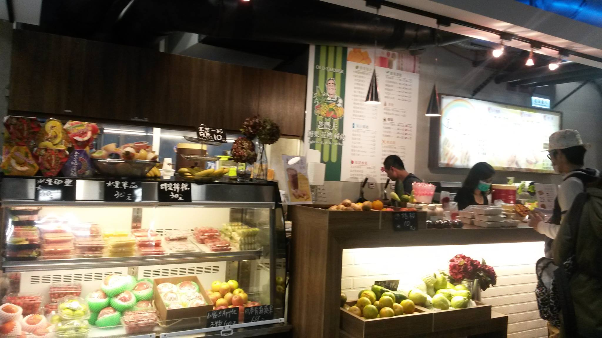
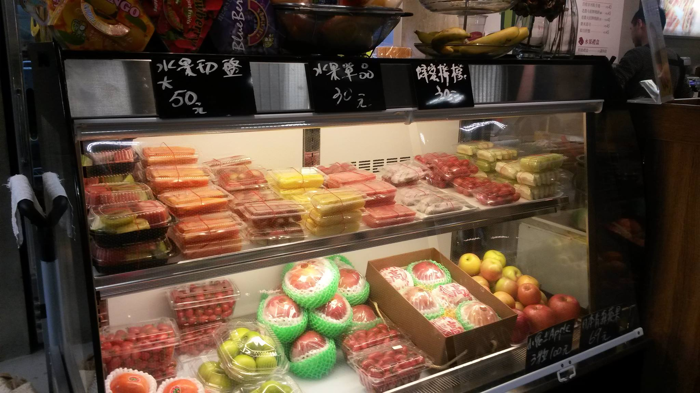

老農夫(鮮果,花禮,輕食)
臺大合作社 | 老農夫(鮮果,花禮,輕食) | 禾家飯館,麵荷 | 醬才堡- 本校營業地點位置 社科院B1
- 餐飲業者名稱 老農夫(鮮果,花禮,輕食)
- 公司名稱 禾順水果店
- 營業時間及休息日 週一至週六：7:30 am ~ 20:00 pm
- 聯絡電話 (02)2365-2047
- 營業項目、型態 水果、果汁、輕食
- 業者簡介
新鮮專送的生機商品 老農夫有限公司創立於民國 85 年，專營大型醫院水果禮盒、鮮花和新鮮果汁，健康生機飲食的生活 也注重健康飲食的輕食早餐，像是養生漿、黑芝麻五榖漿、薏仁山藥漿集各式營養早點，。老農夫商店秉持著『新鮮 健康 便利 專業』的經營理念，追求企業永續經營及成長，獲利狀況正逐年提昇，也會持續鼓勵大眾使用生機飲食、水果禮盒讓生活更健康美好。
餐廳業者參考照片
- 
- 